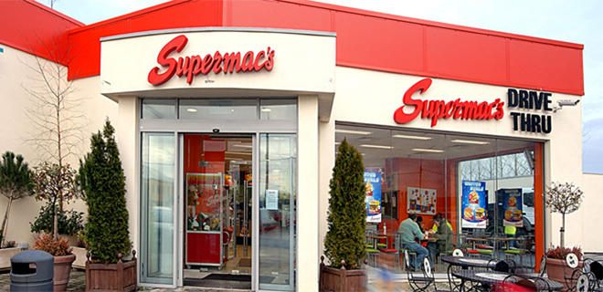
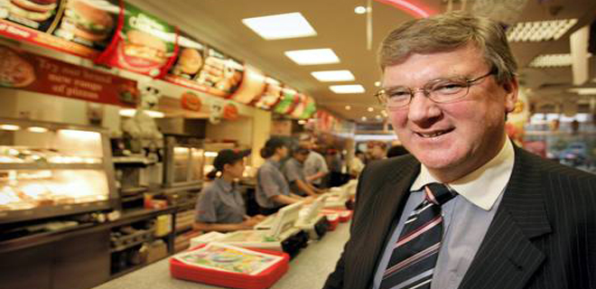
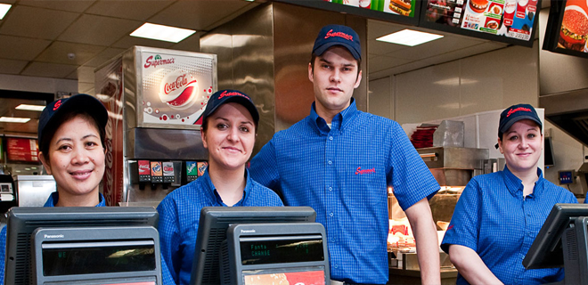
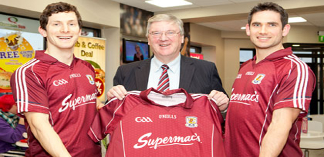

The First Supermacs
The first Supermac’s opened its door in 1978 on Main Street, Ballinasloe, Co. Galway.
Since that first opening Supermac’s restaurants have become a firm fixture in towns and cities around Ireland. Today Supermac’s is the largest indigenous fast food restaurant group with a policy of continued expansion and growth.

Gap In The Market
The managing director of Supermac’s, Pat McDonagh, identified an opportunity in the locality for a fast food offering while teaching in Kilrickle in Co.Galway.
From that first opportunity in Ballinasloe, Supermac’s has grown steadily, bringing its unique brand of wholesomeness and attention to detail to its chain of restaurants across Ireland.

Our Success
The success of the company can be attributed to a number of factors: a unique and innovative menu, a commitment to quality across all aspects of the business and a strong work ethic define Supermac’s as the number one franchise in Ireland

Passion for Sport
Pat is a firm believer in hands-on management and is very much involved in the day-to-day management of his business.
He has a keen interest in sport with a particular interest in hurling. Supermac’s have been the proud sponsors of Galway hurling teams since 1990.